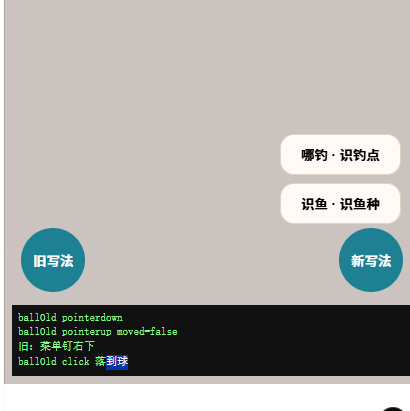
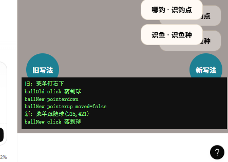

比赛材料：核心功能迭代的完整 Prompt 链 项目：趣渔（社区 / 票务 / 商城 / 塘主 SaaS） 代码版本：
v14-post-interaction分支 HEAD（源码 8.13.0；生产 8.12.0） 编制日期：2026-10-19 原始会话：78f64457-e692-48e2-b8f0-75054467d555、f7ff7f6e-3311-4705-bcdd-d517dd7071c4
这份快照不是事后编写的“AI 使用心得”，而是从 Qoder 的 JSONL 会话日志里逐字抽取的对话记录，按四个核心迭代重组。每章包含：
| 会话 | 字节 | SHA256 |
|---|---|---|
78f64457-e692-48e2-b8f0-75054467d555.jsonl |
12,600,829 | 6095da2415e45d37f24d66c0ccd404d23a583fe70055728330aca511256b3b89 |
f7ff7f6e-3311-4705-bcdd-d517dd7071c4.jsonl |
4,335,643 | 894a392d3638351d55c1563542b1bad1d6f2d074fedcb63e472a119fcd94f7e1 |
原始 JSONL 不随仓库分发（体积大、含本地路径）；本文件中的引文可按上述哈希定位到同一份会话。单章文件与合订本内容一致，评审可按需选择阅读方式。
会话：
78f64457-e692-48e2-b8f0-75054467d555时间：2026-10-06 17:50 → 2026-10-07 10:38（CST） 对应提交：59 条（134dcd3..84f95ff），核心落地a8be879/ef184cb/a3b9ea7上线：2026-10-07 15:15，app 8.12.0，verify:deploy --tar10/10 PASS
用户的第一条输入是完整原文：
Prompt 1（2026-10-06 17:50）
@Grill Me 我想对这个项目帖子做一些优化，如打开帖子，帖子详情页，帖子评论等交互
没有指定页面结构、没有数据库要求、没有验收标准。AI 的第一步不是给方案，而是读代码。它先确认了项目身份与技术栈，再把「帖子线」的现状拆成两类：
feed.invalidate() 大锤等 8 项；同时给出了三条会卡住方案的硬约束：动画门禁禁止首屏静态闭包使用 layoutId/drag；首屏主 JS 预算 ≤70KB br、总传输基线 189.0KB br 不得回退；B 类要跑生产 MySQL 迁移。
这段的价值不在于列了多少问题，而在于它把“优化交互”翻译成了可裁定的技术分叉。 后续 13 个问题全部建立在这些事实上。
比赛要求「完整 Prompt 链」。本案例的用户侧输入有两种：3 条自由输入，以及 13 次结构化决策。后者由 AI 用 AskUserQuestion 逐题提出，用户选择；问答原文都在会话日志里。
| # | 时间（CST） | 原文 | 作用 |
|---|---|---|---|
| 1 | 10-06 17:50 | 我想对这个项目帖子做一些优化，如打开帖子，帖子详情页，帖子评论等交互 |
定义主题 |
| 2 | 10-06 17:55 | 继续 |
首次请求被用户打断后恢复 |
| 3 | 10-07 10:38 | 继续 |
长任务续跑 |
说明：v14 的推进主要靠结构化决策，不是靠长 Prompt。这是刻意的交互方式——一次只问一个会影响实现的问题，避免一口气抛出 25 项让用户凭感觉勾选。
下表「用户选择」一律取自工具结果 Your questions have been answered: …，不是工具入参里的回填值（原因见 §2.3）。
| # | AI 的问题 | 用户裁定 | 对实现的直接影响 |
|---|---|---|---|
| 1 | 范围边界：A 类纯前端 / B 类动 DB？ | A + B 全做 | 25 项、生产迁移、第三方服务 |
| 2 | 列表内点击帖子用什么方式打开？ | 弹层详情 + URL 同步 | Home 不卸载，返回状态从根上保住 |
| 3 | 列表页评论按钮的行为？ | 删 CommentSheet，开 PostSheet 并弹键盘 | 全局只剩一种看帖形态，−150 行 |
| 4 | 评论点赞存哪里？ | 新建 comment_likes 表 | 避开 likes 表已知事务隐患 B-06 |
| 5 | 删评语义？ | 全软删 + 占位 | 不产生楼中楼孤儿 |
| 6 | 帖子收藏存到哪？ | 并入 /favorites 加 Tab | 干掉「渔获集」幽灵术语 |
| 7 | 评论分页与楼中楼？ | 游标分页 + 折叠 + 热门/最新切换 | 两套游标语义 |
| 8 | 帖子图片 base64 存库怎么处理？ | 插入图片落盘修复，评论图建在其上 | 触发案例二 |
| 9 | 图片内容审核怎么补？ | 接阿里云内容安全机审 | 触发案例二 |
| 10 | 图片区单击/双击冲突？ | 整卡可点，信息流取消双击点赞 | 单击零延迟，详情内保留双击 |
| 11 | 懒加载 chunk 的零等待与体积红线？ | idle 预加载 + 上滑转场 | LCP 后 requestIdleCallback 预热 |
| 12 | 25 项怎么分批？ | 一次性大版本 | 前端大改与 DB 迁移同批上线 |
| 13 | 存量 base64 图片迁移后怎么处理？ | 先备份全表，再原地改写为 URL | 回滚预案从“重要”变“必须” |
answers 不一定是用户答案会话日志里，AskUserQuestion 的工具入参带 answers，工具结果又带一段 Your questions have been answered。两者在改选/多题场景下会不一致，本案例出现了两次：
| 问题 | 工具入参 answers |
工具结果（本文采用） |
|---|---|---|
| 范围边界 | 只做 B 类能力补齐 | A + B 全做 |
| 图片存储 | 只做传输瘦身，不落盘 | 插入“图片落盘”修复，图片评论建在其上 |
如果按入参写历史，案例二根本不会存在，整份 Prompt 快照也会变成假的。本文档的规则是：以工具结果为准，并在原始 JSONL 里保留行号供复核。这条规则本身也写进了 docs/competition/README.md §3.3。
AI 先确认了路由结构，再给结论：
/和/post/:id是 Layout 下的兄弟路由（App.tsx:99,104）→ 进详情时 Home 整棵卸载，这就是“返回全丢”的根因。
因此「纯路由 + 状态提升」需要把分页、滚动、tab、点赞态全部提升到路由层，改动面大且容易漏；「弹层 + pushState」让 Home 保持挂载，关闭时 history.back()，天然保住状态。/post/:id 路由页保留，只服务深链冷启动，两者共用 PostContent。
图片 hero 共享元素转场（小红书那种图片飞入详情）在本项目做不了。 它需要列表项和详情页两边都挂
layoutId，而FeedPost位于首屏静态闭包，check-motion-boundary.mjs明令禁止 → build 直接失败。能做的转场只有整页淡入/上滑（不需要layoutId）。
PostSheet 懒加载后带着 CatchViewer（drag="x"），会落进首屏静态闭包。AI 读完门禁脚本后给出精确逃逸路径：
import() 引入 PostSheet（门禁的 resolveImports 只跟静态 import ... from）；PostDetail 从 <Lazy> 升级为 <LazyMax>；这不是“绕过门禁”，而是把门禁的静态分析规则当成模块边界来设计。最终产物里 PostSheet 是独立 chunk，首屏 189.0KB br 基线未回退。
「渔获集」是个幽灵术语——全代码库只出现 1 次，就是
Home.tsx:612那句 toast 文案，没有任何对应的表、页面或功能。
用户选择并入 /favorites 加 Tab 后，AI 把这个词写进 CONTEXT.md 的禁用清单。这是“需求对齐”产生的一个非代码产物：术语裁定。
AI 指出硬删顶层评论会让子回复的 parentId 指向不存在的行。用户选择「全软删 + 占位」后，读取路径统一过滤 deletedAt，删除者与帖主有权限，占位文案保留楼层结构。
| 提交 | 内容 |
|---|---|
a8be879 |
DB：comment_likes、post_favorites、comments 新列与索引 |
ef184cb |
API：帖子图片落盘、feed 载荷瘦身、评论体系、收藏；机审接线 |
a3b9ea7 |
前端：PostSheet 全屏弹层、删 CommentSheet、整卡可点、收藏/评论接后端 |
89d77b0 |
文档：v8.12.0 变更记录 + backlog 登记 8 项新发现 |
关键文件：
src/components/home/PostSheet.tsx、src/components/community/PostContent.tsxsrc/pages/Home.tsx（动态 import + idle 预热）api/services/community.ts（评论/收藏/点赞）db/schema.ts、db/migrations/0013_*、0014_*dae3397 修掉：
createImageBitmap reject，旧的 for … await compressImage() 没有 try/catch，异常冒出后 resolve() 永不执行，外层 await 永久挂起。修法是逐张 try/catch，坏图跳过、好图保留、Promise 必定结算；refetch()，文案切成「重试加载评论」。这两条不是代码审查发现的，是在浏览器里真点出来的。AI 把复现步骤和修复写进提交信息，后续回归有据可查。
e938d7a 的提交信息逐条记录了缺陷与修法。抽三条能说明“为什么静态检查不够”：
FeedPost整卡onKeyDown不判 target：焦点在卡内按钮上按 Enter 会连带开弹层并preventDefault掉按钮自身激活 → 点赞/收藏/分享/更多全排键盘不可用CommentSection在途锁写成likeBusy != null：一条评论点赞在飞时其它评论的点赞被静默吞掉PostContent删帖后 600ms 的onBack计时器无句柄：用户手动关闭后会二次history.back()，把 Home 一起弹掉
这三条都通过 tsc/eslint，只在真实交互路径上出错。修复后新增 verify:static 入口，并把 vitest 加进 build 链——单测不过就不产出可部署物。
6d098ec 修「举报面板关闭再打开仍留着上次内容」。AI 的第一版在提交时复位 state，它自己否掉了：
修法把 state 移进只在 open 期间挂载的内层组件，靠卸载丢弃：不用
useEffect监听 open 复位（本项目 lint 红线set-state-in-effect），也不在提交时复位——我第一版正是提交时复位，那会让“提交失败”把用户写好的说明一起清掉，等于自己引入一个新缺陷。
紧接着 c0b7b6e 给条件子元素补 key，因为“单个条件子元素没 key 也恰好能工作”是巧合不是保证。
这是本案例最能说明“AI 建议需要被验证”的一段。
AI 用「指向不存在数据库的服务」造出断库冷启动，观察到信息流空白、无骨架、无 toast，判断 v14 把 feedQuery.error 改成派生值后兜底失效，立案 B-24（68b4aed），并尝试了三种判据都没触发。它没有继续盲改：
我连换三种判据（
isError→ 加errorUpdatedAt>0→ 再加“已结算但无 data”）都没能触发，说明查询落在我尚未识别的状态上——继续换写法就是盲改，所以我git checkout回退了两次试验改动。
用户回复：
Prompt（2026-10-06 22:26）
好，那就把 B-24 查出根因。
AI 改用临时 DOM 诊断属性，把 react-query 的真实状态渲染出来，读一次后删掉诊断，最终结论是误报：
1. B-24 是我的误报，已撤回。 兜底实测正常：断库冷启动 7 张演示卡 + toast + 点演示卡给出诚实提示，健康路径无误报。
Home.tsx:280的判据从头到尾是对的，三次试验改动都已回退。CHANGELOG/backlog/计划文档三处的错误结论已改正。
对应提交 7d3fb54。这条链完整保留了“AI 提出错误判断 → 用户要求查根因 → AI 用可观测手段推翻自己 → 修文档”的全过程，没有把误报从历史里抹掉。
| 检查 | 结果 |
|---|---|
tsc -b / eslint |
0 错误 |
vitest |
23/23（当时），含机审请求形状 13 条、落盘顺序 8 条、缓存清空 2 条 |
verify:images |
连真实 MySQL 的带图发布链路 PASSED |
verify:static |
首屏 eager JS 148.7KB、CSS 6.44KB、按需 chunk 1.3–1.4KB，全通过 |
verify:handoff --tar r8 |
0 失败 |
verify:deploy --tar r8 |
10/10 PASS，含线上入口 JS 与交付包逐字节一致 |
| 线上切换 | /opt/quyu/dist/boot.js 由 6b5897df…（8.11.0）变为 7775cba9…（8.12.0） |
上线过程中的两个坑也写进了 CHANGELOG：文档里记的旧包 sha 与实际不符，照文档跑会让 sha 闸门放行错产物；回滚脚本此前根本不在服务器上。这两条直接促成了后来的 verify:handoff 泛化（案例三）。
三条真机 UI 行为至今没有人点过（c0b7b6e 的提交信息已如实写明）：
原因不是没写测试，而是当时仓库没有 jsdom、本机无 npm 装不了，浏览器自动化也不可用；这三条只有真实浏览器/真机能验。它们被写进交付清单和「明确未做」，没有被算进 23 条单测的绿灯里。
| 证据 | 位置 |
|---|---|
| 原始会话 | 78f64457-e692-48e2-b8f0-75054467d555.jsonl，SHA256 6095da24… |
| 用户首条输入 | 该 JSONL 第 4 行 |
| 范围裁定 | 第 70–72 行（工具入参与结果不一致，取结果） |
| 图片存储裁定 | 第 200–202 行（同上） |
| B-24 立案 / 撤回 | 第 2022 / 3433 行附近；提交 68b4aed / 7d3fb54 |
| 核心提交 | git show a8be879 ef184cb a3b9ea7 e938d7a 6d098ec c0b7b6e |
| 上线记录 | CHANGELOG.md v8.12.0「部署记录（2026-10-07 15:13–15:16 CST）」 |
会话：
78f64457-e692-48e2-b8f0-75054467d555时间：2026-10-06 18:11 → 23:25（CST） 对应提交：ef184cb（落盘 + 瘦身）、f1795ba（机审返工）、ff036e9/eb68c1c（顺序契约）、b0eda44（真库冒烟） 结论先行：落盘链路已上线；机审在生产上是关闭的，且从未打过真实网关。
案例一问到「图片评论怎么做」时，AI 去查现有的上传链路，结果发现根本不存在 /api/upload：帖子图片是 base64 直接写进 MySQL 的 posts.images JSON 列。
AI 的原话（2026-10-06 18:11）
⚠️ 挖到一个必须先告诉你的生产隐患，它会影响本轮范围：
帖子图片是 base64 直接存进 MySQL 的。
pickImages()返回压缩后的 dataURL（最长边 1600px，JPEG q0.82）Publish.tsx:121把它原样塞进images: photoscreatePost直接images: input.images写进posts.imagesJSON 列- 没有
/api/upload路由，没有落盘，没有大小校验；boot.ts:15的bodyLimit是 50MB，等于不设防
它没有停在“这是个坏味道”，而是列了四种必然的爆炸方式：
recallCandidates() 全列读 + 进程内存缓存 → 几十个真实九图帖就能撑爆单机 Node；max_allowed_packet 时 INSERT 静默失败；AI 给出四个选项，工具入参记录的是「只做传输瘦身，不落盘」，但工具结果里的用户答案是：
Your questions have been answered: "帖子图片 base64 存库这个隐患，本轮怎么处理？"="插入“图片落盘”修复，图片评论建在其上"
这个选择把范围从“前端交互”扩到了“存储链路 + 合规”。AI 立刻指出下一步的硬约束：项目完全没有图片机审能力，而图片评论会把无审核的 UGC 图片入口从一个扩大到两个。
"图片内容审核怎么补？（这是硬合规项，不能默默绕过）"="接阿里云内容安全机审"
至此，本轮同时接入了两件不可逆的事：存量图片地址改写与第三方内容安全服务。
为了接机审，AI 先把客户端写了出来，并在文档里写下“阿里云内容安全支持 base64 提交”。这个前提让它选择了审核先于落盘的顺序——图片还在内存里，直接 base64 发给网关，违规就不写盘，听起来更安全。
但它在后续自查时去核对了官方文档，然后推翻了这句话：
AI 的更正（2026-10-06 23:01）
2. 核实 B-24 时顺手复核了自己写下的“官方文档确认支持 base64 提交”——那句话是错的。 内容安全两版接口（70292 的 2018-05-09、增强版 2022-03-02）都只接受可被服务端拉取的图片 URL，没有 base64 通道。旧实现启用后每次调用都会 4xx，再被我自己那套“失败就放行 + 转人工”的降级口径吞掉，表现成“机审已接入”而实际一张都没审成。
这段话值得逐字读：错误不是“接口调不通”这种显性失败，而是4xx 被降级口径折叠成 unavailable，然后被当成“已接入”。如果没有回查官方文档，这个功能会以“绿灯”的形态上线，一张图都不审。
对应提交 f1795ba，提交信息把三处根因写得很清楚：
顺文档改掉三处：请求体改
{scenes, tasks:[{dataId,url}]}；补发四个必有的x-acs-*头并让它们参与CanonicalizedHeaders；Content-MD5不再.toUpperCase()（base64 大小写敏感）。顺序因此改为「全部落盘 → 按公网 URL 审 → 明确违规则删掉本次新写的所有文件再拒收」，代价是一段最长 3s 的公网可达窗口，收益是链路真能跑通，且顺手修掉了旧注释里承认的孤儿文件遗留。
用户选图（dataURL）
→ ingestImages() 校验类型/张数/路径穿越
→ 写盘 uploads/{posts,comments}/
→ 拼公网 URL（PUBLIC_MEDIA_BASE_URL）
→ moderateImages() 逐张提交阿里云
├─ pass → 保留文件，写库
├─ reject → 删除“本次新写”的全部文件，拒收发布
├─ review → 保留文件，写一条 [系统] 待人工复核
└─ unavailable → 保留文件，写一条 [系统] 待人工复核
→ 发布成功
几个容易被忽略、但提交里有明确断言的点：
Content-MD5 大小写：base64 大小写敏感，旧实现 .toUpperCase() 会让网关算出的 MD5 与请求头不一致，必然 4xx。x-acs-* 头必须参与签名：只加头不参与 CanonicalizedHeaders，签名仍然错。eb68c1c 专门补了这条护栏。这是项目第一份 API 层单测。api/services/imageModeration.test.ts 用 mock fetch 断言：
{scenes, tasks:[{dataId,url}]}，不是 base64；x-acs-* 头，Content-MD5 等于对 body 重算的标准 base64，且不等于它的大写形式；Authorization 里的签名与按文档规则重算的结果一致；unavailable，绝不把异常抛给发布链路；PUBLIC_MEDIA_BASE_URL、缺 AK 时：一次请求都不发。api/services/imageStore.test.ts 则钉顺序契约：
BAD_REQUEST，本次新写文件一张不留（含先 pass 的那张）；一个测试自身的坑也写进了提交：path.resolve(cwd, "/uploads/...") 在 Windows 下会跳到盘根（E:\uploads\...），第一次跑是假失败；断言文件存在要用 join + basename。
AI 没有直接写“全表 UPDATE”，而是先给生产库一条只读预检：
SELECT COUNT(*) FROM posts
WHERE JSON_SEARCH(images, 'one', 'data:image%') IS NOT NULL;
结果（2026-10-07 上午）：
未删帖 13 条中仅 1 条图片仍是 base64，
images合计 0.93MB。
于是迁移工具 scripts/migrate-post-images.mjs 设计成：
--apply 才写库，写前导出原值备份；--rollback 用备份恢复。四条路径（dry-run / --apply / 幂等重跑 / --rollback）都在本地演练过。但——
存量 base64 回填未执行（工具就绪，取决于生产预检命中行数）。 ——
CHANGELOG.md第 520 行
那 1 条帖子至今可能仍是 base64。仓库没有留下 --apply 的生产执行记录，所以本文不声称已清零。
CHANGELOG.md 第 517 行写得很直白：
图片机审在生产上并没有开：
IMAGE_MODERATION_ENABLED仍为false，PUBLIC_MEDIA_BASE_URL未配。“v14 已上线” ≠ “违规图会被拦”。
原因是真实网关需要阿里云 AK，而 AI 没有、也不应该代用户开通。当前未配置时的行为是放行 + 写一条待人工复核记录，不是拒绝发布。这是刻意的 fail-open：
现状本来没有任何图片机审，贸然 fail-closed 会让未开通该服务的部署彻底发不了图。 ——
.env.example
fail-open 还是 fail-closed 至今没有拍板。这条被写进 docs/NEXT-ITERATION.md 的待办，也写进了本文的“未完成项”。
false，并且不把“机审已接入”写进任何完成声明。| 证据 | 位置 |
|---|---|
| 隐患发现与四种爆炸方式 | 会话 JSONL 第 149 行附近；CHANGELOG.md 第二节 |
| 图片存储裁定 | JSONL 第 200–202 行（入参与结果不一致，取结果） |
| 机审裁定 | JSONL 第 208–210 行 |
| base64 前提被推翻 | JSONL 第 4538 行附近；提交 f1795ba |
| 请求形状测试 | api/services/imageModeration.test.ts |
| 顺序契约测试 | api/services/imageStore.test.ts、提交 ff036e9 / eb68c1c |
| 真库冒烟 | scripts/smoke-images.ts、npm run verify:images |
| 生产预检与“未回填” | CHANGELOG.md 第 295、520 行 |
| 机审关闭声明 | CHANGELOG.md 第 517 行、.env.example 第 56–73 行 |
会话：
f7ff7f6e-3311-4705-bcdd-d517dd7071c4时间：2026-10-11 18:54 → 22:52（CST） 对应提交：1e3079c（功能 + 迁移配对 + 门禁泛化）、b862338（部署脚本纳管）、d52df46（文档）、b3d43f1（exit=127 修复）、3a77ff8（上线记录） 线上结果：19:55 上线 v8.13.0，22:44 回滚到 v8.12.0；回滚原因不是识鱼，见案例四
Prompt 1（2026-10-11 18:54）
再次服务器上线一下最新版本
AI 先去量线上，而不是直接打包：
boot.js = 7775cba9…，与上次交付一致；它把这个歧义摊开，用户裁定：
"“再次上线最新版本”指的是哪一份？"="先做完 v15 上线准备"
这句话把任务从“部署”改成了“先把不可上线的东西修到可上线”。
AI 对工作区、迁移、部署脚本、门禁、文档、产物逐项实测，得到下表：
| 检查 | 实测结果 | 为什么阻断 |
|---|---|---|
| 提交状态 | v15 全部未提交：12 改 + 4 个未跟踪文件 + eval-fishid/ |
没有可审的版本 |
| 迁移 | 0015_fish_id_run.sql 不在 drizzle journal（15 条，末条是 0014），也没有配对的生成版 0015_fish_id.sql |
CI 空库路径建不出 fish_id_calls / fish_id_samples |
| 部署脚本 | 服务器 /root/v14-sql/ 只有 0013/0014；/root/v14-deploy.sh 的迁移清单和结构核对串硬编码 0013/0014 |
照它跑不会应用 0015，新代码切上去就运行期报错 |
| 门禁 | tsc 0、vitest 23/23、check:sql 过；但 .env.example 没有三个识鱼变量 |
verify:handoff 第 4 项会 RED |
| 证据 | 识鱼零测试；CHANGELOG / 迭代计划 / runbook / ADR 搜不到“识鱼” | 无验收、无记录 |
| 产物 | app/dist/boot.js 是 10-07 13:09 的，比 FishId.tsx（10-11 11:49）旧 4 天 |
现有产物根本不含这功能 |
这张表是本章的核心：“功能写完了”与“能上线”之间，隔着迁移、门禁、脚本、文档、产物五道独立的门。 任何一道没对齐，部署脚本都会以“成功”的形态把坏版本推上去。
verify:handoff 当时是这样工作的：
--tar 指向 r8（8.12.0）；idx === 14。这意味着它对着一份上一版的包也会报全绿。AI 把 --tar 改为必填，迁移判据改成扫 v1x-*.sh、按包内实际迁移判断，不再写死版本号。
为了证明新判据会变红，它做了一个夹具：删掉 0015 生成版。结果：
3 条 FAIL、exit 1——这道新判据被证明能变红（它正好抓住了 0015 当初的孤儿状态）。换回真目录后 10 PASS。
这符合项目的一条固定做法：新校验先用夹具看它变红，否则“扫到 0 个对象也通过”就是假绿灯。
| 提交 | 内容 |
|---|---|
1e3079c |
识鱼功能（K3 视觉识别 + 预付费计费）、0015 生成版 + 直跑版 + snapshot、journal 16 条、14 条单测、handoff 泛化、.env.example 补变量 |
b862338 |
把 v15 部署脚本纳管进仓库，并给它一套能变红的夹具演练 |
d52df46 |
CHANGELOG 立 v8.13.0 一节，backlog 补 B-37…B-42 |
b3d43f1 |
修 verify:static 打印“全部通过”却 exit=127 |
3a77ff8 |
上线记录落笔，状态从“准备完成未上线”翻成“已上线 + 实测数字” |
1e3079c 一次改了 24 个文件、+5474 行，但它是一个功能模块的完整落地（DB + API + 页面 + 测试 + 门禁），不是把多个功能打包。
识鱼是预付费：免费次数用完才扣余额；余额不足不调模型；失败要退款/退次数；未授权时样本表零写入。这些路径都在 api/services/fishId.test.ts 里。
AI 在测试文件头部明确写了没有覆盖什么：
两条没有被覆盖的，写在这里而不是假装齐全：
SQL 守卫文本（
>= price、< limit、GREATEST）没测——那是 drizzle 私有结构，对它做字符串断言会在升级后悄悄退化成“匹配不到也算通过”；逐断言的变异验证没做——注入变异的操作被本机策略拦下，按规矩没换第二条通道重试。
已拿到的红是“把桩的 read/write 写成属性时 13/14 全红”，证明测试确实在跑被测代码，但不等于每条都能变红。这两条登记为 B-39、B-40。
v14 的部署脚本用 POST 调 query，健康服务器上也会恒回 405，导致每次成功部署都显红。v15 改成：
CONCAT 字面量改为 5 项逐条数值比较——不写自己在本机验证不了的字符串等式。用户裁定：
"v8.13.0 已经备好，下一步执行到哪一步？"="直接上线全流程"
2026-10-11 19:55 CST，bash /root/v15-deploy.sh exit 0，六道闸门全过。
| 步骤 | 实测 |
|---|---|
| 上传 | 三份文件远端 sha 与本地逐字节一致；三个目标路径事先查过都不存在，没有覆盖任何唯一副本 |
| sha 对齐 | v14-resync-sha.sh 写入 f89ede3f…，原脚本留 .bak-before-sha-resync |
| 先跑 gates | 打印“现役 7775cba9… / 新包 565c1f8a…”；跑完再量，boot.js 仍是旧的——证明 gates 没碰任何东西 |
| 备份 | 全库 quyu-before-v8.13.0-20261011-195540.sql.gz（31 表 / 含 Dump completed）+ 旧 dist 自动归档 |
| 迁移 | 0015 两遍无错；结构核对五项数值全中 |
| 复核 | 首页 br 协商 504 B；app.feed / posts.comments 200；app.fishId.balance 401（GET，不再是恒 405）；三个 mutation 400（空入参被 zod 拦下，没有真的扣费） |
| 逐字节绑定 | verify:deploy --base … --tar … 10/10 PASS；线上入口 JS 与交付包一致；FishId-a5iwSAvf.js 200 |
部署脚本里索引数期望写成 3，实测是 5：information_schema.STATISTICS 把两张新表的 PRIMARY 也算进去了。断言当时写的是 ≥3，所以没有误杀部署。
AI 的处理是不悄悄改文档，而是在上线记录里写明“下一版应改成只数命名索引”。这条现在仍在 backlog。
v14 上线前的备份是 29 表，v15 上线前是 31 表，而 v15 的备份是在跑 0015 之前取的。AI 没有放过这个差异：
fish_id_calls / fish_id_samples 的计数，都是 0 → 0015 当时确实没应用；comment_likes / post_favorites。结论：31 = 29 + v14 的两张表，不是 0015 提前泄漏。这条调查过程写进了上线记录，而不是只写一个结论。
生产 /opt/quyu/.env 里没有 MOONSHOT_API_KEY 这一行，而悬浮球菜单无条件列出「识鱼」。结果是：每个用户点进去都拿 PRECONDITION_FAILED（412）“识别服务暂未开通”。
降级是干净的——不崩、不扣钱、退次数——但用户看到的就是“这功能坏了”。AI 没有替用户决定“配 Key 还是收入口”，而是把它列为必须拍板的项。直到 10-19，这一项仍未解决。
AI 先前的任务清单里写过“534 张真图跑批量评测、产出 results.json”。它去实测：
scripts/eval-fishid.ts 只打印、从不落盘；.env 都没有，真实 API 跑不起来。那句话不成立，我没有把它写进 CHANGELOG 当证据（登记 B-37）。
所以本文不出现任何“识别准确率 xx%”的数字。仓库里能证明的只有：功能链路、计费守卫、降级行为；不能证明模型在真实鱼种上的准确率。
FISH_ID_MIN_CONFIDENCE_X100 在 .env.example 里看起来像个阈值开关，但唯一读它的 isHighConfidence() 零调用点；真正决定界面文案的是另外两处硬编码 0.55。AI 在 .env.example 里照实写：“别把它当开关用”（B-38）。
22:44，用户说“回滚未有识鱼的版本吧”。回滚到 8.12.0 后：
boot.js 回到 7775cba9…；verify:deploy 10/10 PASS；fishId 相关路径 404，fishSpot 401，无 5xx；回滚原因不是识鱼本身，而是同批上线的悬浮球改动破坏了「哪钓」入口——完整过程见案例四。
verify:handoff、恒 405 的探针、把 PRIMARY 算进去的索引数——三个都是“看起来绿”的假信号。修法不是调低期望，而是先用夹具证明它会红。| 证据 | 位置 |
|---|---|
| 用户输入与两次裁定 | JSONL 第 458、523–525、1421–1423 行 |
| 六类阻断项审计 | 会话 2026-10-11 18:58 起；CHANGELOG.md v8.13.0 节 |
| 0015 配对与 journal 16 | db/migrations/0015_fish_id.sql、0015_fish_id_run.sql、meta/_journal.json |
| 14 条计费测试 | api/services/fishId.test.ts |
| 部署脚本与演练 | scripts/v15-deploy.sh、scripts/v15-deploy-drill.sh、npm run verify:v15-deploy |
| 上线实测 | CHANGELOG.md v8.13.0「部署记录」 |
| 无 Key / 无准确率 / 环境变量摆设 | .env.example 第 32–48 行；CHANGELOG.md v8.13.0「明确未做」 |
会话：
f7ff7f6e-3311-4705-bcdd-d517dd7071c4时间：2026-10-11 20:08 → 22:52（CST） 对应提交：62c2c06（立案）、411d5c0（修复）、f4eb3ff（门禁补洞）、5d6940a（回滚） 结果：修复包 r3 已就绪但未上线；生产回滚到 8.12.0
Prompt 1（2026-10-11 20:08）
哪钓怎么打不开了
此前 13 分钟，v8.13.0 刚刚全量上线。用户是唯一真机用户，也是这版改动的签发者。
AI 的第一反应不是改代码，而是分两条线取证：服务器真实行为 + 这次改动里可能碰到入口的代码。
AI 先用 curl 打 /fish-spot，得到 404。它没有立刻下结论，而是把老页面 /me、/post/123 一起打了一遍，发现也全是 404：
我的探针没带
Accept: text/html，所以那一串 404 是探针的假象（/me、/post/123这些老页面也一样 404）。用浏览器口径重测。
补上 Accept: text/html 后，/fish-spot、/fish-id 都是 200 + 有 #root。SPA fallback 正常，深链不是问题。
这条值得单独写：故障现场的第一批数据可能是工具造成的。如果 AI 直接按 404 去查路由或 nginx，会浪费一整轮，甚至改错地方。
服务器日志里，19:55 之后有真实设备在正常浏览：
auth.me、products.list、notify.unreadCount 都成功；app.fishSpot.*。说明请求根本没发到服务端。再看入口：除路由表外，全仓库只有悬浮球链到 /fish-spot。而 v15 恰好改了悬浮球——从“点一下直接进”改成“点一下弹菜单、再点一次才进”。
范围锁定：客户端那一下点击。
v15 的菜单是 position: fixed，钉在视口右下（right: 20px、bottom ≈ 148–172px），不跟随球的位置。而球可以拖到左缘并吸附，位置还存在 localStorage['qy-fishball-pos']。
AI 量出：菜单中心离球中心 186px。球贴在左边时，手指点下去，菜单弹在右下角，屏幕只是暗了一下——看起来就是“点了没反应”。
这是代码里确定存在的缺陷，与用户现象同源。
菜单在 pointerup 之后才渲染，浏览器随后按落点重新命中 click，可能直接落到遮罩上把菜单关掉。
AI 明确标注这只是一个假设：
我的复现是用合成指针事件做的（
pointerdown/pointerup/click显式打给球），它绕过了真实触摸的命中测试——而“同一次点击刚落点就被刚渲染出来的全屏遮罩接走、于是菜单瞬间被关掉”这类故障，恰恰只有真机触摸才会暴露。我想用浏览器真实点击复现，被策略拦下了，我没有绕过去。所以这句话是假设，不是结论。
Prompt 2（2026-10-11 20:26）
我好像知道原因了：我apk安装包版本太低
AI 去解了两个联网版 APK 的壳：
capacitor.config.json 都写着 server.url = http://47.109.185.118:3000、cleartext: true → 界面来自服务器，装哪个壳都一样；Mozilla/5.0 (Linux; Android 16; PLB110 …; wv)；而壳里那份 9 月 6 日的兜底资源连哪钓都没有，跑不出这份埋点。结论：服务器可达时，APK 版本不影响哪钓进不进得去。 这个假设被证据排除。
（顺带发现：壳里的兜底资源确实落后三个版本，断网时会掉回一个没有哪钓的旧界面。这是另一个真问题，后来通过重打 APK 修掉，但它治不了本次故障。）
Prompt 3（2026-10-11 22:17）
附件引用：
93de223a-….png1f6f4664-….png
第一张图把旧写法与新写法放在同一屏，底部是真实点击日志：

ballOld pointerdown
ballOld pointerup moved=false
旧: 菜单钉右下
ballOld click 落到球
click 落到了球上，没有落到遮罩上。 假设②当场作废；旧写法的问题从头到尾只有一个——菜单钉在屏幕另一头。
第二张图里两个菜单同时出现：

AI 注明这是夹具的缺陷（每颗球各开各的遮罩、互不关闭），不是线上行为。
AI 的回应
你自己点的这两张图比我做的任何推断都值钱——它证伪了我的假设②。也就是说
click并没有落到刚渲染的遮罩上，菜单没有被自己关掉；旧写法的问题从头到尾只有一个——菜单钉在屏幕另一头（球在左下，菜单在右侧），所以你点下去“只看到屏幕暗了一下”。假设②到此作废。
这一段是整份快照里“用户如何引导 AI 修 Bug”的最好例子：用户没有写代码，只提供了一张带日志的实拍，就推翻了一个 AI 无法在本地复现的假设。
Prompt 4（2026-10-11 21:43）
修悬浮球
AI 先做了一条自我约束：
先证明机制，再改代码——我不想在没看到红的情况下上线一个“看起来对”的修复。
它想用真实点击跑一个 file:// 夹具，但点击通道在生产页和本地夹具上都被策略拦下两次。它没有换第三条通道：
点击这条通道在本环境里被拦了两次（生产页、本地夹具都拦），我不绕，也不再找第三条。所以那个“同一次点击被遮罩接走”的假设，我不打算靠猜来修——改设计让它根本没有机会发生：点按直接进哪钓，路径里不出现遮罩。
navigate('/fish-spot')，恢复 v14 的肌肉记忆；rect 推导，不再引用视口常量；opacity: 0 + animation forwards，系统抑制动画时就等于“看不见”）；click 改绑 pointerdown，但不声称它修掉了假设②——只是让点按路径上根本没有遮罩。src/lib/fishballMenu.ts 是纯函数，src/lib/fishballMenu.test.ts 有 12 条：
navigate；navigate；drag；right:20 / bottom:160），断言它离球 >150px（实测 278px）；新公式 <120px（103.9px）；两者结果必须不同。负向对照是关键：如果只断言“新公式等于某个期望值”，测试可能只是把实现抄了一遍；把旧实现喂进去必须变红，才能证明这道判据真的在防 B-45。
Prompt 5（2026-10-11 21:51）
悬浮窗有动效无跳转
AI 没有辩解，直接承认组件还没接完：
fishballMenu.ts+ 12 条测试已就位并通过，但FloatingBall.tsx我还没改，所以线上仍是坏的那一版。继续把组件接上。
随后把手势判定接进组件。这里也有一条“AI 不能只说做了纯函数就宣布修好”的教训。
修复包 r2 构建后，AI 发现 193 处不同、95 个分块改名——不是注释能造成的量级。它没有把 r2 推上线，而是追查构建链，重出 r3。
更严重的是另一次：
重出热修包时我把 esbuild 的
--banner:js漏了，boot.js里 65 处require(在 ESM 下必ReferenceError，服务根本起不来；而当时的verify:handoff是 0 失败。原因很结构性：整树比对是“包 vs 本机 dist”，两边出自同一次错构建就一起绿——它只能证明“包等于我本机这份”，不能证明“这份能跑”。
f4eb3ff 补了一条判据：包内 boot.js 首行必须以 import { createRequire } from 'module' 开头。它先在真实坏包上跑出了红：
FAIL ... 首行="var __create = Object.create;"
PASS ... 交付包与本机构建逐文件一致
这两行同屏，就是“逐文件一致”不足以证明可运行的最好证据。
Prompt 6（2026-10-11 22:42）
回滚未有识鱼的版本吧
AI 先重新量了一遍现状，而不是拿一小时前的记忆当现状：
565c1f8a… / index-MZH_DVpL.js；7775cba9… / index-HdRk0PXS.js，44 个 .br，壳里 0 个 fishid 分块——确实是没有识鱼的那版。执行回滚 + 重启后，从外面验穿：
boot.js 回到 7775cba9…；verify:deploy 10/10 PASS；app.feed、posts.comments 正常；fishId 相关 404，fishSpot 401，无 5xx；0015 留在库里，旧代码不读它。
为什么回滚而不是继续修：修复本身已经写好（
411d5c0），但热修包 r3 尚未切换，而线上入口坏着的时间已经 3 小时。用户选择先回到可用版本，把修复留到下一次有验证窗口时再上。今天生产仍是 8.12.0，r3 在服务器上待命。
createRequire 判据补上了这个洞。boot.js 哈希、回滚后探针，都在切换前验过。| 证据 | 位置 |
|---|---|
| 报障原文 | JSONL 第 1640 行 |
| 404 假象与 SPA 复测 | 会话 2026-10-11 20:11–20:14 |
日志无 app.fishSpot.* |
同上；journalctl -u quyu --since 19:50 |
APK server.url 与 UA 证据 |
会话 2026-10-11 20:26–20:31 |
| 用户截图与假设②证伪 | assets/b45-menu-offset.png、assets/b45-two-menus.png；JSONL 第 2261 行 |
| 纯函数与 12 条测试 | src/lib/fishballMenu.ts、src/lib/fishballMenu.test.ts；提交 411d5c0 |
createRequire 门禁 |
提交 f4eb3ff；scripts/verify-handoff.mjs |
| 回滚 | 提交 5d6940a；CHANGELOG.md v8.13.0「回滚」 |
| 当前生产 | 8.12.0，7775cba9…；r3 未上线 |
| 会话 | 覆盖内容 | SHA256 |
|---|---|---|
78f64457… |
案例一、二（v14 帖子交互、图片链路） | 6095da24…b3b89 |
f7ff7f6e… |
案例三、四（v15 识鱼、B-45 事故） | 894a392d…4f7e1 |
| 提交 | 说明 |
|---|---|
a8be879 |
v14 DB：评论点赞、收藏、评论新列 |
ef184cb |
v14 API：图片落盘、feed 瘦身、评论/收藏、机审接线 |
a3b9ea7 |
v14 前端：PostSheet、删 CommentSheet、整卡可点 |
e938d7a |
交付前双轴审查修 6 项行为缺陷 |
f1795ba |
机审按官方文档返工（base64 通道不存在） |
68b4aed / 7d3fb54 |
B-24 立案与撤回 |
1e3079c |
v15 识鱼功能 + 0015 迁移配对 + 门禁泛化 |
b862338 |
v15 部署脚本纳管 + 夹具演练 |
b3d43f1 |
verify:static exit=127 修复 |
62c2c06 |
B-45 立案（含排除项） |
411d5c0 |
B-45 修复：点按直进、长按菜单跟随球 |
f4eb3ff |
门禁补 createRequire 判据 |
5d6940a |
回滚到 v8.12.0 |
npm ci
npm run check # tsc -b
npm test # 5 文件 / 49 用例
npm run check:docs # 文档指针全解析
npm run build # 含单测、SQL、动画边界、预压缩等门禁
与生产相关的只读复核（需要网络与交付包）：
npm run verify:handoff -- --tar <dist.tar.gz>
npm run verify:deploy -- --base <url> --tar <dist.tar.gz>
MOONSHOT_API_KEY，点击返回 412。IMAGE_MODERATION_ENABLED=false，未打真实网关，fail-open/fail-closed 未拍板。--apply 记录。docs/competition/README.md §2.2 披露。